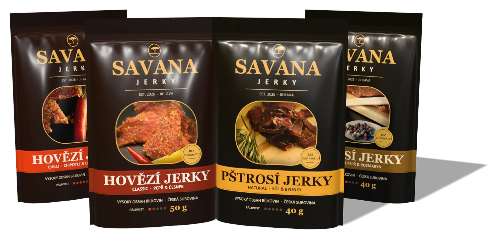
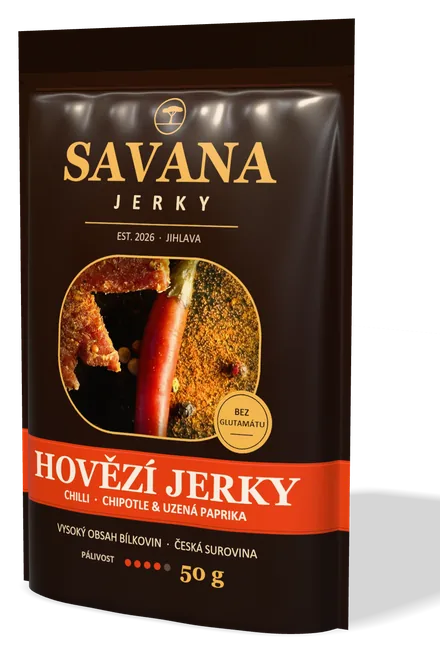
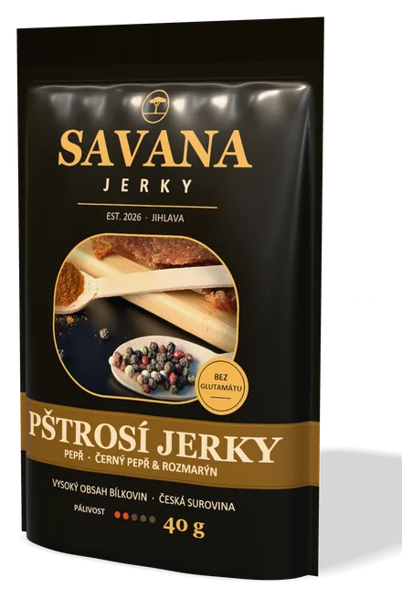
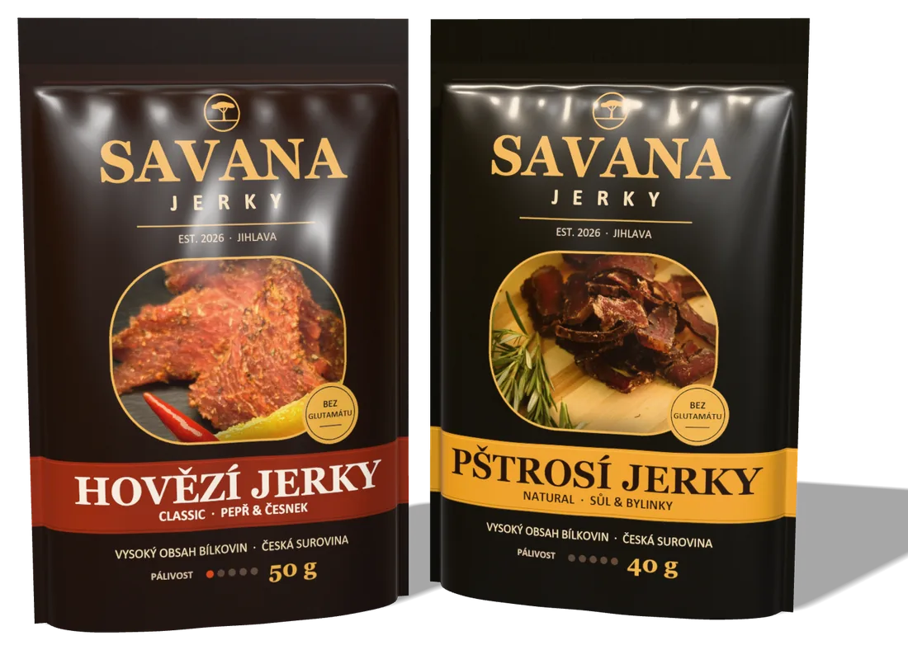
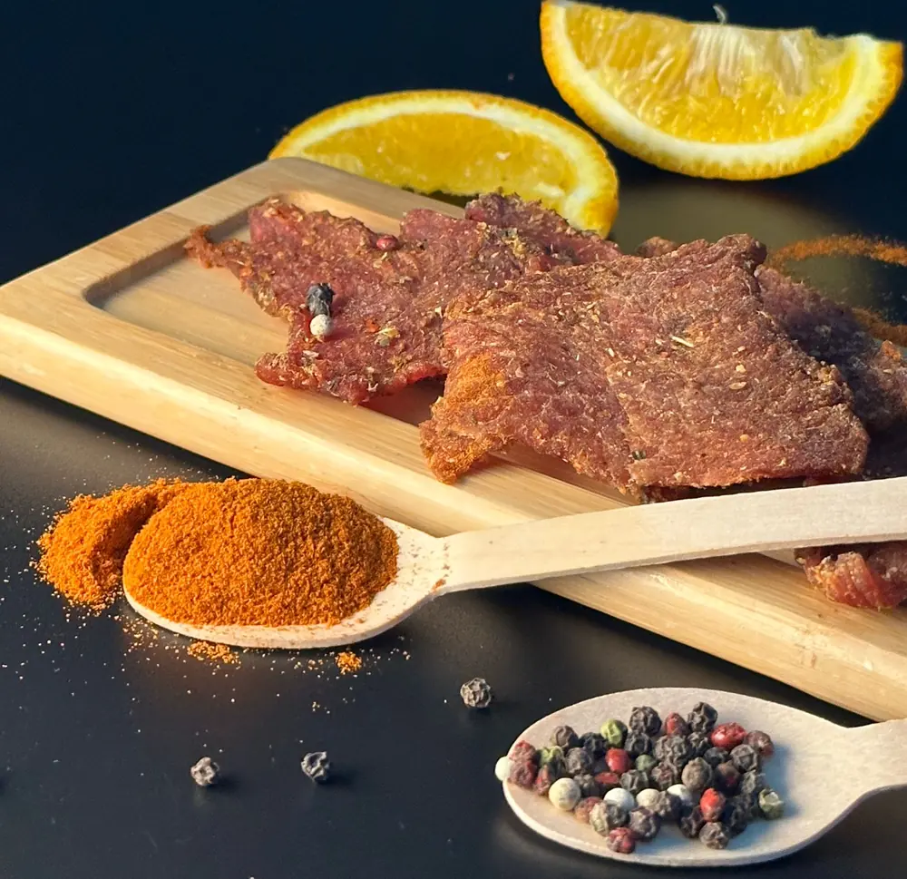

Hovězí jerky
Classic
Kýta z českého skotu marinovaná 24 hodin s černým pepřem a česnekem. Klasika, která chutná každému.
Pálivost
99 Kč50 g198 Kč / 100 g
ObjednatSušené maso z české suroviny · Jihlava
Tence krájené maso, 24 hodin v marinádě a pomalé sušení. Proteinový snack bez glutamátu a umělých barviv – na túru, do fitka i na dlouhou cestu.

Náš sortiment
Hovězí jerky z kýty českého skotu pro každý den a pštrosí jerky jako prémiová specialita, kterou v běžných obchodech nenajdete.
Hovězí jerky
Kýta z českého skotu marinovaná 24 hodin s černým pepřem a česnekem. Klasika, která chutná každému.
99 Kč50 g198 Kč / 100 g
Objednat
Hovězí jerky
Pikantní varianta s chipotle a uzenou paprikou. Pro všechny, kdo mají rádi pořádný oheň.
99 Kč50 g198 Kč / 100 g
Objednat
Pštrosí jerky
Velmi libové pštrosí maso jen se solí a bylinkami. Jemná chuť, která vynikne sama o sobě.
149 Kč40 g372,50 Kč / 100 g
Objednat
Pštrosí jerky
Hrubě mletý černý pepř a rozmarýn. Prémiová specialita pro gurmány a milovníky výrazné chuti.
149 Kč40 g372,50 Kč / 100 g
ObjednatCeny jsou uvedeny včetně DPH. E-shop a prodej právě připravujeme – brzy zde zveřejníme, jak objednávat.
Proč Savana Jerky
Nesoutěžíme nejnižší cenou. Sázíme na kvalitní maso, krátký dodavatelský řetězec a chuť, kterou si zapamatujete.
Velcí výrobci ho běžně nenabízejí. U nás je vlajkovou lodí celé značky.
Hovězí od chovatelů z okolí Jihlavy, pštrosí maso z českých farem. Krátká cesta, čerstvé maso.
Maso, sůl, koření a bylinky. Žádný glutamát, žádná umělá barviva.
Hovězí řada za 198 Kč / 100 g – levnější než velké zahraniční značky, kvalitou řemeslná.


Naše specialita
Pštrosí maso je červené maso s chutí podobnou jemnému hovězímu, ale je výrazně libovější. Proto z něj vzniká mimořádně čisté a lehké jerky, které ocení sportovci i gurmáni.
Maso odebíráme od českých pštrosích farem. Natural variantu ochucujeme jen solí a bylinkami, aby vynikla přirozená chuť masa.
Orientační hodnoty pro syrové pštrosí maso podle databáze USDA FoodData Central.
2,5 kg masa 1 kg jerky
Při sušení odejde z masa voda, ale bílkoviny zůstanou. Proto je jerky tak výživné – a proto si zaslouží jen to nejlepší maso.
Jak vyrábíme jerky
Žádné zkratky. Každá dávka projde stejným pečlivým procesem v naší výrobně v Jihlavě, schválené Státní veterinární správou a řízené systémem HACCP.
Libovou kýtu ručně očistíme a nakrájíme na tenké plátky po směru vláken.
Plátky odpočívají celý den v marinádě z koření, bylinek a soli.
6–8 hodin při 60–70 °C. Maso ztratí vodu, ale zachová si chuť i bílkoviny.
Hotové jerky necháme vychladnout, aby se v sáčku nesrážela vlhkost.
Do sáčků s absorbérem kyslíku – díky tomu vydrží až 12 měsíců bez konzervantů.
Každou šarži kontrolujeme a teprve pak ji expedujeme k vám.

Pro koho je Savana Jerky
Zdravější alternativa k chipsům: hodně bílkovin, málo tuku a žádné drobky v autě.
Rychlá dávka bílkovin po tréninku, bez vaření a shakeru.
Lehké, trvanlivé a výživné. Do batohu na celodenní túru.
Zasytí na dlouhé cestě a nepotřebuje lednici.
Svačina mezi poradami, místo sladkostí z automatu.
Výživové hodnoty
Ve 100 g jerky je bílkovin víc než v proteinové tyčince. A tuku jen zlomek oproti chipsům.
| Hovězí Classic | Pštrosí Natural | |
|---|---|---|
| Energie | 1 110 kJ / 262 kcal | 1 062 kJ / 251 kcal |
| Tuky | 3,8 g | 2,5 g |
| z toho nasycené | 1,5 g | 0,9 g |
| Sacharidy | 9 g | 2 g |
| z toho cukry | 7 g | 1 g |
| Bílkoviny | 48 g | 55 g |
| Sůl | 4,2 g | 4,0 g |
Orientační hodnoty. Přesné údaje najdete vždy na obalu výrobku.
Kde nás najdete
Začínáme tam, kde jerky dává největší smysl – u sportu, na cestách a online.
Připravujeme. Doručení po celé ČR a dárková balení.
Již brzyRychlý proteinový snack na dlouhou cestu po D1 i jinde.
Ideální svačina hned po tréninku, přímo na recepci.
Chcete Savana Jerky ve své prodejně či firmě? Rádi se domluvíme.
Více informacíČasté dotazy
Odpovědi na nejčastější otázky o jerky, výrobě a skladování.
Jerky je tence krájené libové maso, které se marinuje a pomalu suší. Vzniká trvanlivý masový snack s vysokým obsahem bílkovin a nízkým obsahem tuku. Původem jde o tradiční způsob konzervace masa z Ameriky.
Pštrosí maso je červené a velmi libové. Chutí připomíná jemné hovězí, je ale křehčí a méně tučné. Natural varianta je ochucená jen solí a bylinkami, Pepř přidává výrazný černý pepř a rozmarýn.
Neotevřené balení vydrží 9–12 měsíců při pokojové teplotě díky sušení a balení s absorbérem kyslíku. Skladujte v suchu a chladu, po otevření spotřebujte do 3 dnů.
Ne. Používáme jen maso, sůl, koření a bylinky – bez glutamátu sodného a bez umělých barviv.
Hovězí kýtu nakupujeme od chovatelů a jatek na Vysočině, pštrosí maso od českých pštrosích farem. Krátký dodavatelský řetězec znamená čerstvější surovinu a podporu místních chovatelů.
Pštrosí maso je v nákupu zhruba dvakrát dražší než hovězí kýta a z 1 kg syrového masa vznikne jen asi 0,4 kg jerky. Proto ho prodáváme v menším balení 40 g.
Ano. Jerky obsahuje kolem 50 g bílkovin ve 100 g a jen málo tuku. Jedno 50g balení hovězího jerky tak dodá zhruba 24 g bílkovin – podobně jako odměrka proteinového nápoje.
Připravujeme vlastní e-shop a prodej na čerpacích stanicích a ve fitness centrech. Brzy zde zveřejníme, kde a jak objednávat.
Kontakt
Prodej spouštíme již brzy. Kontaktní údaje pro objednávky, velkoobchod a spolupráci s fitness centry zde doplníme.
Připravujeme e-shop a první prodejní místa na čerpacích stanicích a ve fitness centrech. Kontakt pro objednávky a velkoobchod zde zveřejníme co nejdříve.
Prohlédnout produkty